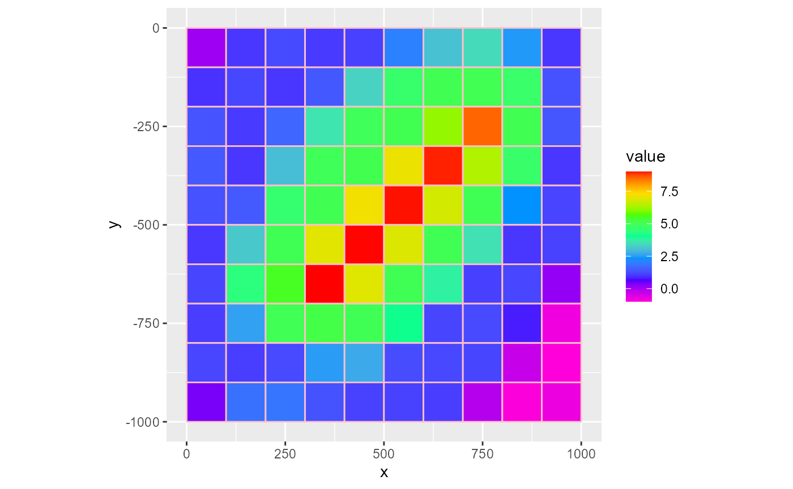
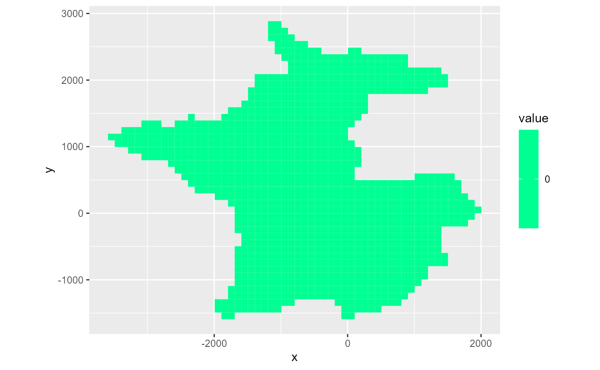
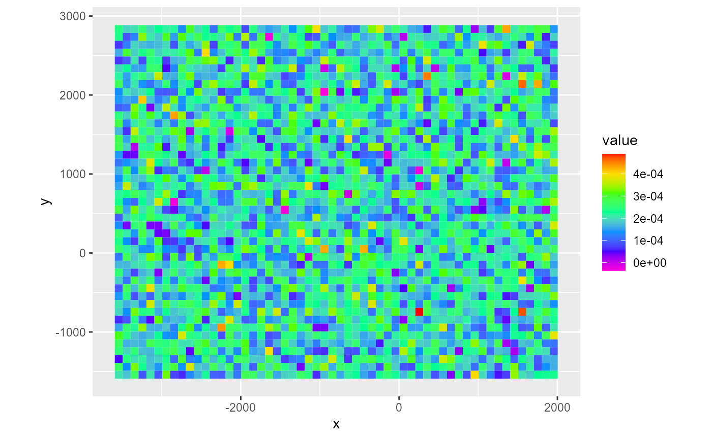
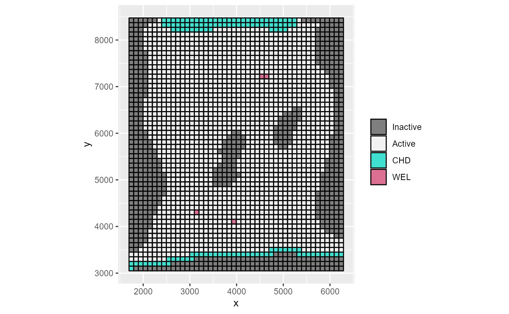

##
! {RMODFLOW} is still in its experimental lifecycle stage.
##
! Use at your own risk, and submit issues here:
##
! <https://github.com/rogiersbart/RMODFLOW/issues>Plotting basic RMODFLOW objects
RMODFLOW provides S3 plotting methods through the rmf_plot() functions. These return a ggplot2 layer and are therefore subjected to the full capabilities of the ggplot2 package.
For almost all rmf_plot functions, you’ll need a RMODFLOW dis object. There are rmf_plot functions for a bunch of RMODFLOW classes but at their core they most of the time wrangle the object into a rmf_2d_array or rmf_3d_array and call the respective rmf_plot function on those objects.
We’ll start by explaining plotting the basic RMODFLOW classes, i.e. the rmf_arrays and rmf_list. You can read more about these types of objects in the vignette on the structure of input data.
rmf_2d_array
The rmf_plot.rmf_2d_array() plotting function plots a rmf_2d_array:
dis <- rmf_example_model("example-model.dis") %>%
rmf_read_dis()
rmf_plot(dis$top, dis = dis)
The type argument controls the plot type. Possible values are fill (default), factor, grid, contour and vector. At this point, it is good to note that fill and factor use the fill aesthetic from ggplot2 whereas grid, contour and vector use the colour aesthetic.
Factor
The factor type is useful for discrete data. It coerces the values in the rmf_2d_array into factors. Plotting can therefore be slow if the array holds many distinct values. In that case however, you should consider using the fill type. You can supply a levels argument to label the legend wich is a character vector with the labels. If not named, the values in this vector are assigned to the sorted array factor levels.
ds <- rmf_create_array(0, dim = c(dis$nrow, dis$ncol))
ds[, 1] <- 1
ds[, dis$ncol] <- -1
rmf_plot(ds, dis = dis, type = "factor")Grid
The grid type will only plot the gridlines.
rmf_plot(dis$top, dis = dis, type = "grid")To plot gridlines on top of an existing plot, the quickest way is to set the gridlines argument to TRUE. Alternatively, you can supply a character argument to plot coloured gridlines
rmf_plot(dis$top, dis = dis, gridlines = TRUE)
rmf_plot(dis$top, dis = dis, gridlines = "pink")
Contour
The contour type will plot contour lines. You can tweak the binwidth argument to your liking (the defaults might not always work). Additionally, the labels can be removed by setting label = FALSE
rmf_plot(dis$top, dis = dis, type = "contour")
rmf_plot(dis$top, dis = dis, type = "contour", binwidth = 2, label = FALSE)Vector
The vector type will calculate a gradient using rmf_gradient() and will plot the vector arrows using ggquiver. Note that RMODFLOW assumes the array contains scalars to calculate the gradient. To supply your own vector values, you can set the uvw argument which is a named list with u and v components (and w for 3d) which are 2d (3d) arrays with the gradient values in the x and y (& z) directions.
rmf_plot(dis$top, dis = dis, type = "vector")
rmf_plot(dis$top, dis = dis, type = "vector", vecint = 3)
u <- rmf_create_array(0.5, dim = c(dis$nrow, dis$ncol))
v <- rmf_create_array(-1, dim = c(dis$nrow, dis$ncol))
uvw <- list(u = u, v = v)
rmf_plot(dis$top, dis = dis, type = "vector", uvw = uvw)Colour palette
You can specify your own colour palette and the number of colours with colour_palette and nlevels (7 by default). For type grid, no colour scale can be supplied. For type contour and type vector, the default colour scale is 'black' which is not a scale at all.
rmf_plot(dis$top, dis = dis, colour_palette = heat.colors, nlevels = 8)
rmf_plot(dis$top, dis = dis, colour_palette = heat.colors, nlevels = 8, type = 'vector')
Mask & bas
You can supply a logical array as the mask argument to only include certain parts of the grid. If not supplied, the entire grid is plotted. If a bas object is supplied, the ibound array is used as a mask object.
mask <- rmf_create_array(0, dim = c(dis$nrow, dis$ncol))
mask[1:dis$nrow/2, ] <- 1
rmf_plot(dis$top, dis = dis, mask = mask)
# water-supply problem
dis_ws <- rmf_example_file("water-supply-problem.dis") %>%
rmf_read_dis()
bas_ws <- rmf_example_file("water-supply-problem.bas") %>%
rmf_read_bas(dis = dis_ws)
# without bas
rmf_plot(dis_ws$top, dis = dis_ws)
# with bas
rmf_plot(dis_ws$top, dis = dis_ws, bas = bas_ws)
Adding plot layers
Since all rmf_plot functions return a ggplot2 layer, you can add them on top of each other. Just remember to set add = TRUE in all added layers. You can of course add other ggplot2 layers besides the rmf_plot results.

rmf_plot(dis$top, dis = dis) +
ggplot2::scale_fill_viridis_c()
#> Scale for 'fill' is already present. Adding another scale for 'fill', which
#> will replace the existing scale.Legend
By default, the legend is only active when type is fill or factor for the first plotting layer. To add the legend, set legend = TRUE. To supply a legend title, just set the legend argument as such:
rmf_plot(dis$top, dis = dis, legend = FALSE)
rmf_plot(dis$top, dis = dis, legend = "Topography (m)")
rmf_3d_array
Plotting a rmf_3d_array with rmf_plot.rmf_3d_array() uses mostly the same functionality as plotting a rmf_2d_array. The big difference being that now you must supply either a i, j or k integer argument which subsets the rmf_3d_array. If k is supplied, the subsetted array is passed to rmf_2d_array. If i or j are supplied, a cross-section is plotted:
rmf_plot(dis$botm, dis = dis, k = 1)
rmf_plot(dis$botm, dis = dis, j = 5, gridlines = TRUE)All other arguments discussed with plotting rmf_2d_arrays can still be used. Note however, that when adding plot layers, they must have the same subset otherwise the plots make no sense or might error out. RMODFLOW does not have a check for this.
rmf_4d_array
Plotting a rmf_4d_array with rmf_plot.rmf_4d_array() works much like plotting a rmf_3d_array: the user must supply a i, j or k integer. Additionally, a l integer must be supplied to subset the 4th dimension. If not present, the last time step will be plotted.
hed <- rmf_example_file("water-supply-problem.fhd") %>%
rmf_read_hed(dis = dis_ws, binary = FALSE)
rmf_plot(hed, dis = dis_ws, bas = bas_ws, k = 1)
#> Warning: Plotting final time step results.
rmf_plot(hed, dis = dis_ws, bas = bas_ws, j = 5, l = 10)If i, j and k are supplied and no l is supplied, a time-series is plotted of cell ijk:
rmf_plot(hed, dis = dis_ws, i = 20, j = 25, k = 1)
rmf_list
When a rmf_list is plotted, it is converted to a rmf_3d_array using rmf_as_array() with sparse = FALSE. There are three arguments in rmf_plot.rmf_list() that you need to know about.
First, the variable argument, which is either an integer or a character name, specifies which column of the rmf_list to plot. The default, 'id', does not plot a variable but the locations of the cells in the rmf_list.
Secondly, active_only is a logical dictating how to handle the cells not present in the rmf_list. The default (FALSE) sets all non-active cells to 0. If TRUE, these cells are set to NA.
Lastly, the fun argument indicates how to handle duplicate cells. In a rmf_list, multiple instances of the same cell may appear. For instance, there can be multiple wells in a single MODFLOW cell. When plotting a variable, the fun argument specifies how to aggregate these values. The default is sum, but you can specify any function that returns a single numeric from one or more values (e.g. mean).
Since rmf_plot.rmf_list eventually calls rmf_plot.rmf_3d_array you can pass arguments for the latter as well.
ls <- data.frame(i = c(5, 5, 6),
j = 5,
k = 1,
q = c(-500, -500, -1500)) %>%
rmf_create_list()
rmf_plot(ls, dis = dis, k = 1)
rmf_plot(ls, dis = dis, k = 1, active_only = TRUE)
rmf_plot(ls, dis = dis, k = 1, variable = 'q', active_only = TRUE, gridlines = TRUE)
# fun = mean, notice change in scale
rmf_plot(ls, dis = dis, k = 1, variable = 'q', active_only = TRUE, fun = mean)Plotting boundary condition packages
As discussed in the vignette on boundary conditions, MODFLOW boundary conditions can be grouped into those representing continuous spatial features and those representing discrete spatial features. The former will be plotted by rmf_plot.rmf_2d_array; the latter by rmf_plot.rmf_list. By default, the last stress-period is plotted; this can be overwritten by setting the kper argument. The variables which can be plotted depend on the package.
Continuous boundary conditions
For continuous boundary conditions, the S3 plotting methods are simple wrappers for rmf_plot.rmf_2d_array with an additional kper and variable argument. The variable is set to sensible defaults for every package, e.g. 'recharge' for the RCH package.
rch <- rnorm(dis_ws$nrow*dis_ws$ncol, mean = 0.0002, sd = 0.00008) %>%
rmf_create_array(dim = c(dis_ws$nrow, dis_ws$ncol), kper = 1) %>%
rmf_create_rch(dis = dis_ws)
rmf_plot(rch, dis = dis_ws)
Discrete boundary conditions
Concerning the discrete boundary conditions, the respective S3 plotting methods will set sensible defaults for the rmf_plot.rmf_list arguments. By default, variable = 'id' which plots the locations of the boundary condition cells; active_only = TRUE and the fun argument is set based on the variable that’s plotted which can differ between boundary conditions. In general, if the variable is conductance, fun = sum, otherwise fun = mean.
riv_ws <- rmf_example_file("water-supply-problem.riv") %>%
rmf_read_riv(dis = dis_ws)
rmf_plot(riv_ws, dis = dis_ws, k = 1, variable = 'conductance')Plotting flow packages
There are no S3 plotting methods for the BCF, LPF and NWT packages. Simply plot the arrays you want by calling rmf_plot on them directly:
lpf_ws <- rmf_example_file("water-supply-problem.lpf") %>%
rmf_read_lpf(dis = dis_ws)
rmf_plot(lpf_ws$hk, dis = dis_ws, k = 1)For the HUF package however, there is a S3 plotting method: rmf_plot.huf(). By default, it plots the hydrogeological units (hgu’s) using type = 'factor'. The levels argument is set to the names of the hgu’s provided by huf$hgunam. You can select rows, columns & layer with i, j & k as with normal rmf_plot functions. You can subset prefered hgu’s with the hgu argument which accepts either integers or character names of the hgu to plot. By default, the mask object is provided by rmf_convert_huf_to_mask().
# No example problem with HUF package atmPlotting output
Plotting output is shown in the vignette on output handling.
Plotting MODFLOW models
To quickly have a glance at an entire MODFLOW model that’s been read in, rmf_plot also has a S3 method for the modflow class. This plots the IBOUND array and the discrete boundary condition packages that are active. Continuous boundary conditions like RCH and EVT are not plotted since that would overwhelm to plot. You have to select a i, j or k section to plot:
m <- rmf_example_file("rocky-mountain-arsenal.nam") %>%
rmf_read(verbose = FALSE)
rmf_plot(m, k = 1)
If you wish to omit a certain package, specify the omit argument which takes a character vector as input. Note that it requires MODFLOW abbreviations for the packages, like the ftype in the NAME file:
rmf_plot(m, k = 1, omit = 'CHD', gridlines = FALSE)In some models, not all boundary conditions are present in all layers. For example, wells are often present in deeper layers. Instead of plotting all layers separately to view them, we can reproject all boundary condition cells to the current layer when the k index is given by setting to_k = TRUE. Note that the IBOUND is not reprojected.
m <- rmf_example_file("example-model.nam") %>%
rmf_read(verbose = FALSE)
# nothing in layer 2
rmf_plot(m, k = 2)
# force showing all
rmf_plot(m, k = 2, to_k = TRUE)Underlying code
When you call rmf_plot on a RMODFLOW object, it is converted to a tibble data frame and subsequently plotted using ggplot2. You can do this yourself for maximum flexibility:
library(ggplot2)
# rmf_plot(m$dis$top, dis = m$dis) is basically:
rmf_as_tibble(m$dis$top, dis = m$dis) %>%
ggplot() +
geom_polygon(aes(x = x, y = y, group = id, fill = value)) +
coord_equal() +
scale_fill_gradientn(colours = rev(rainbow(7)))